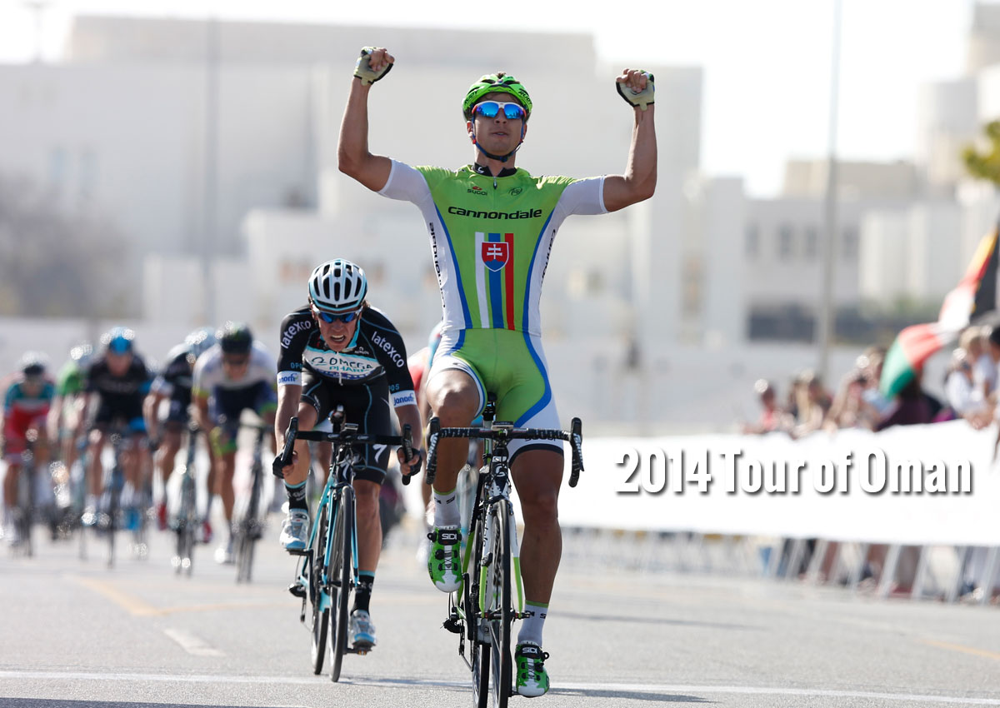

Sagan wins his first World Tour stage at the 2010 Paris–Nice, on the third stage
He won another stage later in the race, as well as the points classification

2011
Sagan wins his first Grand Tour stages, winning three during the Vuelta a España
2012
After a fourth successive stage win in the 2012 Tour of California,
Sagan establishes a record number of stage wins at the race, with seven
Sagan wins the opening road stage of the 2012 Tour de France, his first Tour,
aged 22 years, 157 days
As a result, Sagan became the youngest rider to win
a Tour stage since Lance Armstrong in the 1993 Tour de France
Sagan becomes the ninth rider to win the points classification in the Tour de France
in his first appearance in the race
2013
Sagan wins a total of 22 races, the most for any professional rider in 2013
2015
Sagan becomes the first Slovak rider to win the World Road Race Championships,
soloing to victory in Richmond, Virginia
2016
Sagan becomes the first Slovak rider to win a Monument classic, winning the 2016 Tour of Flanders
In the process, he assumes the number one position in the UCI World Ranking
Sagan surpasses Hugo Koblet and Ferdinand Kübler for most stage wins at the Tour de Suisse,
with his twelfth victory coming on the second stage of the 2016 Tour de Suisse
Sagan becomes the second rider to win the points classification in the Tour de France five times
After the event is opened to elite riders for the first time, Sagan becomes the inaugural winner
of the men's road race at the 2016 European Road Championships
Sagan tops the individual rankings for the 2016 UCI World Tour, doing so for the first time
Sagan retains the World Road Race Championships in Qatar, becoming the first rider to retain the
world title since Paolo Bettini in 2006 and 2007
2017
Sagan takes 100th professional career win at Grand Prix Cycliste de Québec
Sagan becomes the first rider to win the elite men World Championship road race three years in a row
and also the first one to win three titles on three different continents, by winning the road race in Bergen
He also becomes the fifth and the youngest rider to win three career titles
2018
Sagan wins his second Monument by winning the 2018 Paris–Roubaix after attacking from the peloton
54 km from the finish
After stage 15 in the 2018 Tour de France Sagan received his 100th green jersey
Sagan becomes the second rider to win points classification in the Tour de France six times
2019
Sagan becomes the first rider to win points classification in the Tour de France seven times
2020
Sagan becomes the 100th rider to win stages in all three Grand Tours
2021
Sagan wins the points classification in the Giro d'Italia, his first points classification
in a Grand Tour other than the Tour de France